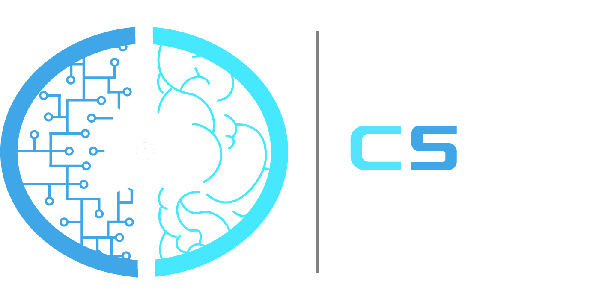

<div class="page-footer z-depth-5 transparent">
    <div class="container ">
        <div class="row justify-content-center">
            <div class="ficha col-6 col-md-4">
                <p>Contacto</p>
                <div>
                    <a class="white-text" href="https://www.google.com/maps/place/Escuela+T%C3%A9cnica+Superior+de+Ingenieros+Inform%C3%A1ticos+de+la+Universidad+Polit%C3%A9cnica+de+Madrid/@40.4054946,-3.8354464,15z/data=!4m5!3m4!1s0x0:0xdf7b007bb6904fa5!8m2!3d40.4054946!4d-3.8354464">
                        <h6>
                            <fa-icon class="footer-icon" [icon]="faMapMarkerAlt" size="lg"></fa-icon>
                            Escuela Técnica Superior de Ingeniería Informática, 28660 Boadilla del Monte, Madrid</h6>
                    </a>
                </div>
            </div>
            <div class="col-auto ficha ">
                <p>Síguenos</p>
                <a href="https://twitter.com/cslabupm">
                    <fa-icon class="footer-icon" [icon]="faTwitter" size="lg"></fa-icon>
                </a>
                <a href="https://www.facebook.com/cslabupm/">
                    <fa-icon class="footer-icon" [icon]="faFacebook" size="lg"></fa-icon>
                </a>
                <a href="https://www.instagram.com/cslabupm/">
                    <fa-icon class="footer-icon" [icon]="faInstagram" size="lg"></fa-icon>
                </a>
            </div>
        </div>

        <div class="row justify-content-center">
            <div class="col-auto row ficha">
                
                
                
            </div>
        </div>
    </div>
</div>